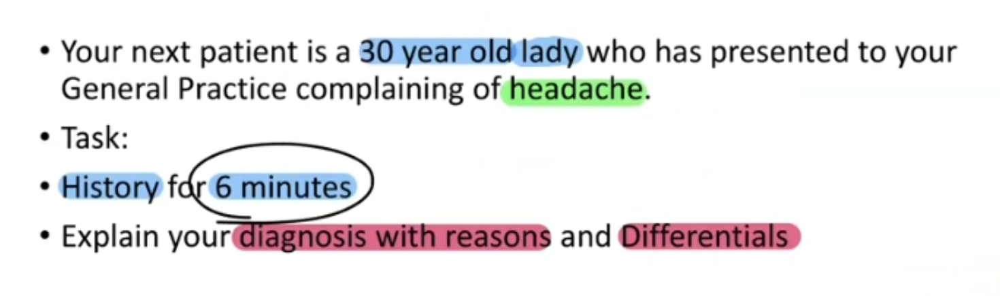

Migraine - History Taking
Source: Dr. Amir workshop — Med workshop 2 - 2026 / CLASS 1 HEADACHE (Aug 2026 drop) · Specialty: neurology
Scenario and Differential Grouping
A 30-year-old woman with headache of unknown duration; the primary assessed activity is history taking. Group the differential and lead with the strong, specific diagnoses before the weaker ones:
- Red flag: brain tumour.
- Common headaches (MTC): migraine, tension, cluster.
- Infection.
- Brain/intracranial: ICH, intracranial hypertension, meningitis, trigeminal neuralgia.
- Referred pain and other causes.
The MTRIC mnemonic can be used to structure the list.
Opening, Concern and Haemodynamic Stability
Introduce yourself after sanitising hands. Open-ended question: "How can I help you today?" The patient reports a 6-month headache that is not improving, causing missed work and worry. Respond to the concern: "I understand your concern, I'm sorry you're going through this, Mary; I'm here to help — I'll ask a few questions and make the best management plan." Ask "Are you in pain now?" If haemodynamic stability was not confirmed at the outset, request it from the examiner before proceeding.
Pain Characteristics (SIQORAA)
- Site: unilateral, alternating left/right but always one-sided per episode.
- Intensity: 6–7/10.
- Quality: throbbing/pulsatile.
- Onset/timing: 6 months, episodic once or twice weekly.
- Radiation: none.
- Alleviating/aggravating: better in a dark, quiet room.
- Affect on life: bed-bound on headache days, needing sick leave.
Unilateral, throbbing, 6-month headache relieved by sleeping in a dark room gives a provisional diagnosis of migraine.
Migraine Key-Point (Probing) Questions
- Nausea/vomiting with the headache.
- Photophobia/phonophobia (light or noise sensitivity).
- Aura (sparkling/flashing lights).
- Triggers: food, alcohol/wine, contraception (confirm COCP vs POP).
- Family history of migraine.
Red Flags for Brain Tumour
- Pain waking the patient at night.
- Early-morning headache and vomiting.
- Worse with sneezing or coughing.
- Neurological deficit: weakness, numbness/pins-and-needles, blurred vision.
- Weight loss; personal or family history of cancer (including brain tumour).
Rule Out Other Differentials
Tension headache: stress assessment (home, work, mood, sleep). Infections: fever/chills, sore neck (also excludes cervicogenic), dental hygiene, post-nasal drip. Medication: current medications to exclude benign intracranial hypertension. Trigeminal neuralgia: pain triggered by facial movement. Trauma: head injury. Add rash (shingles) if time allows.
Good Closure and the Shorter 3-Minute Variant
Closure with SADMA (Smoking, Alcohol, Drugs, Medications, Allergies), past and family history. In a 3-minute history variant, haemodynamic stability may be skipped; use an abbreviated pain assessment (site, quality, alleviating/aggravating) plus the key migraine probes (phonophobia, aura, triggers, contraception, family history).
Critical management point: in a woman with migraine the combined oral contraceptive pill should be stopped — failing to address this is scored as a critical error.
Diagnosis Explanation
"Most likely you have migraine." Explanation: the blood vessels in the brain dilate, causing the headache. Reasons: unilateral throbbing pain relieved in a dark quiet room, nausea/vomiting, light sensitivity, wine as a trigger, aura, and family history. Then briefly address brain tumour (unlikely — no red flags), tension headache (no stress) and infection/meningitis (no fever), listing cluster, ICH, BIH, trigeminal neuralgia and medication-overuse headache if time remains.
Case Figures




🔬 Expert Review & Enhancements
Reviewed by: history-taking-expert (Australian clinical supervisor) · fact-checked against the irStudy medical textbook RAG index.
✏️ Corrections
The vasodilation model is outdated; migraine is now understood as a primary neurovascular disorder involving cortical spreading depression and trigeminovascular activation (RACGP/eTG Neurology). A lay explanation such as 'a temporary change in the way the nerves and blood vessels in your brain work' is more accurate while remaining patient-friendly.
Per Australian guidance (eTG; Family Planning), migraine WITH aura is an absolute contraindication (WHO MEC category 4) to any oestrogen-containing contraceptive at any age. Migraine WITHOUT aura is category 2-3. Progestogen-only options (POP, implant, Mirena) are safe alternatives - this nuance should be taught explicitly.
⭐ Suggested Enhancements
🏷️ Metadata
📚 Reference Citations (RAG)
Churchills_Pocketbook_of_Differential_Diagnosis (1).pdf p.123 (p136) qdrant:deb1d62e-9e5b-4d71-8602-b1541919658e
John Murtagh General Practice, 8th Edition.pdf p.index (p3614) qdrant:058f9e82-d886-453b-9e2e-c5c6bd699d07
John Murtagh General Practice, 8th Edition.pdf p.80 (p229) qdrant:c4c0c7c3-11ce-41ad-b015-a13ca14f48ba